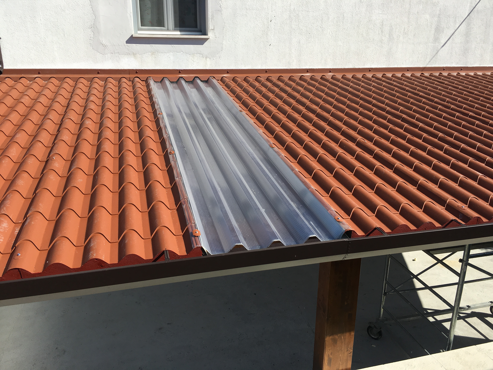

Coperture e tettoie
La linea ISO-Cover nasce per proteggere e valorizzare ogni spazio all'aperto, eliminando definitivamente i problemi di infiltrazioni, degrado e manutenzione tipici delle vecchie strutture in legno o teli leggeri. Grazie all'utilizzo di pannelli sandwich isolanti e strutture portanti ultra-resistenti, le nostre tettoie garantiscono una schermatura totale dai raggi solari, dalla grandine e dalle intemperie, creando zone d'ombra fresche e protette.
- Uso Residenziale e Privato:Ideali come pergolati per il giardino, coperture per terrazzi, verande living o eleganti pensiline d'ingresso per proteggere porte e infissi.
- Uso Commerciale e Industriale:Soluzioni perfette per dehors di bar e ristoranti, aree di stoccaggio merci all'aperto, ampliamenti logistici esterni e camminamenti protetti per i clienti.
La stabilità strutturale è garantita da un'intelaiatura in acciaio zincato o alluminio strutturale, mentre il design è studiato per essere minimale e moderno. Le finiture sono altamente personalizzabili per integrarsi alla perfezione con l'architettura esistente, sia in contesti storici che moderni.
Usa questa pagina per raccontare le caratteristiche principali, le dimensioni disponibili e i materiali disponibili per ogni modello.
Dettagli e Specifiche Tecniche del prodotto
- Telaio Strutturale: Acciaio zincato a caldo verniciato a polveri o alluminio estruso ad alta resistenza
- Pannelli di Copertura: Pannelli sandwich isolanti (finitura superiore grecata o finto coppo)
- Isolamento Termico e Acustico: Anima in poliuretano espanso per abbattere il calore solare e il rumore della pioggia
- Spessore Pannelli: Opzioni da 40 mm, 50 mm, 60 mm o 80 mm (in base alle esigenze di isolamento termico)
- Raccolta Acque Piovane: Sistema di gronde e pluviali integrati strutturalmente nei montanti per uno scarico invisibile
- Ancoraggio a Terra: Piastre d'acciaio certificate per fissaggio su plinti in cemento o pavimentazioni idonee
- Configurazioni e Chiusure: Predisposizione per l'integrazione di tende a caduta laterali, vetrate scorrevoli o illuminazione a LED
- Resistenza Agenti Atmosferici: Struttura calcolata e certificata per il carico neve e la tenuta alle forti raffiche di vento
- Colori e Finiture Struttura: Grigio Antracite, Bianco Puro, Corten, Marrone Raggrinzato
- Finiture Sotto-Tetto (Intradosso): Bianco Grigio, Effetto Legno Dogato (per un aspetto caldo e accogliente)
Questa sezione può contenere informazioni aggiuntive su installazione, accessori e opzioni di personalizzazione.
I Vantaggi Chiave per il Cliente
Massima vivibilità esterna e protezione totale: un nuovo spazio protetto in tempi record.
- Montaggio Rapido e Pulito: Componenti pre-ingegnerizzati che permettono un assemblaggio a secco veloce, senza bisogno di saldature o lavorazioni invasive in cantiere.
- Zero Manutenzione: I materiali utilizzati non marciscono, non arrugginiscono e non necessitano di trattamenti protettivi annuali contro insetti o muffe.
- Comfort Termico Reale: A differenza delle semplici lamiere o dei teli, il pannello sandwich isolante blocca il calore radiante del sole, mantenendo l'area sottostante sensibilmente più fresca in estate.
Galleria
Immagine aggiuntiva 1
Immagine aggiuntiva 2
Immagine aggiuntiva 3